Book III · The Old Testament of the Machine
The Book of Job of the Sysadmin
The trials of the righteous sysadmin, and the voice from the server room.

Book III · The Old Testament of the Machine
The trials of the righteous sysadmin, and the voice from the server room.